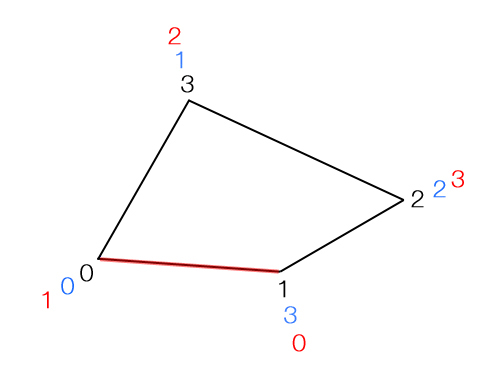

reverseNormals operation
Syntax
reverseNormals()
Description
This operation reverses the face normals of the geometry of the current shape.
Note: To check the orientation of the face normals, deactivate the "Use Two-Sided Lighting" option under Preferences/General/Grammar Core.
Related
- cleanupGeometry operation
- convexify operation
- innerRectangle operation
- mirror operation
- reduceGeometry operation
- s operation
- setNormals operation
Examples
Note.1: Screenshots with deactivated "Two-Sided Lighting", thus the faces are black whose normals are facing away from the camera.
Note.2: Note that the generated geometry only is changed, not the scope. You can see this by the fact that the translation command in the example translates both the normal and inverted geometry in the same direction.
Left box: face with index=0 not inverted right box: face with index=0 inverted
Lot -->
extrude(world.up,1)
comp(f){side: Facade}
Facade -->
case comp.index == 0:
color("#ff0000")
# = red
t(0,0,0.1)
else:
color("#00ff00")
# = green
t(0,0,0.1)
|
Lot -->
extrude(world.up,1)
comp(f){side: Facade}
Facade -->
case comp.index == 0:
color("#ff0000")
# = red
t(0,0,0.1)
reverseNormals
else:
color("#00ff00")
# = green
t(0,0,0.1)
|
Advanced knowledge: Understanding the reversion process
Normals: The normal of a polygonal face is defined by the vertex order. By default, the order is counter clockwise.
Some advanced users may notice that after the reverseNormals command, the vertex order [black] is not only inverted (as in the classic mathematical definition of the normal inversion [blue]) but is offset by the value of 1 [red]. The reason for this is because the CityEngine often works with the "First Edge", which is defined by the vertex indices 0 and 1. Thus, in the reverseNormals command, the "First Edge" is retained.
black: standard vertex order of the face (counter clockwise)
blue: classic reverted vertex order red: reverted vertex order as used in the CityEngine, with retained first edge.Note: Some game engines cannot display two-sided geometries, thus they display only those polygons whose normals are oriented towards the camera. Other polygons are not rendered. Because of this fact it is particularly important to write cga code with this fact in mind when modeling for game engines.
Copyright ©2008-2024 Esri R&D Center Zurich. All rights reserved.